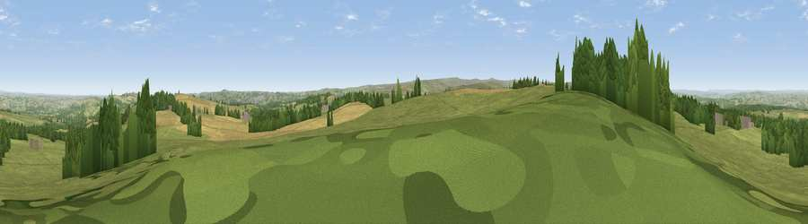

Viewpoint near Edmundbyers
#8221 in England · top 10% of its area beats it · near EdmundbyersThe view, rendered

A 360° render of this exact spot computed from the terrain model, tree cover and land cover — summer colours, afternoon light, calibrated against photographs of famous viewpoints. Real trees, hedges and buildings will differ in detail.
The panorama
Grey silhouette: terrain skyline in each direction (720 bearings, Earth curvature and refraction included). Dashed green: skyline with trees (+15 m) and buildings (+8 m) as obstacles. Blue strip: how far the ground is visible on each bearing.
Where the view opens
Wedge length = distance to the farthest visible ground on that bearing (vegetation-aware). Rings at 10, 25 and 50 km.
What fills the view
67% grassland · 16% cropland · 16% woodland · 1% built-up
Angular shares of the visible panorama (visual magnitude), not map area. Landscape diversity 0.40 (0–1 Shannon).
Key numbers
More beautiful places nearby
The staircase of upgrades: each row has a higher view potential than everything closer. Driving times are estimates from straight-line distance, calibrated against real road routing — check an actual route before setting out.
| Place | Direction | Drive | Score |
|---|---|---|---|
| Viewpoint near Whittonstall | E · 2 km | ~5 min | 67.9 |
| Viewpoint near Slaley | W · 2 km | ~6 min | 69.8 |
| Currock Hill | ENE · 8 km | ~16 min | 70.4 |
| Viewpoint near Hedley on the Hill | ENE · 9 km | ~17 min | 71.5 |
| Viewpoint near Greenside | ENE · 11 km | ~21 min | 74.2 |
| Pontop Pike | E · 12 km | ~23 min | 77.8 |
| Little Dun Fell | SW · 39 km | ~58 min | 78.4 |
| Cross Fell | WSW · 40 km | ~59 min | 78.7 |
54.88917, -1.95768 · source: screening · position refined by local search. Computed location — check access rights before visiting.